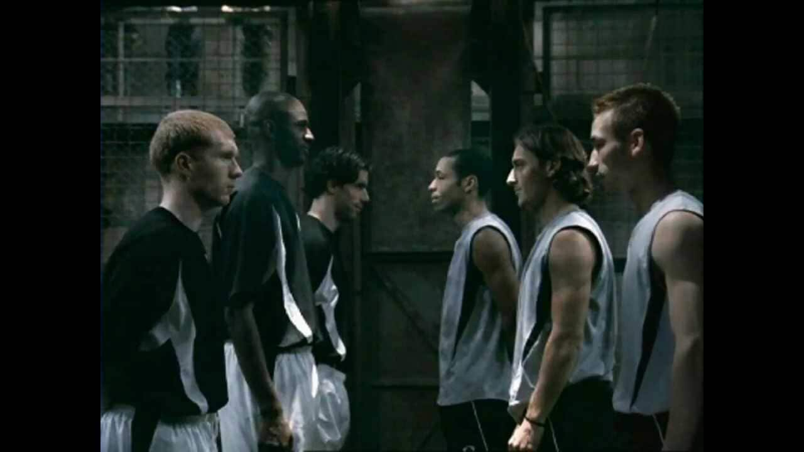
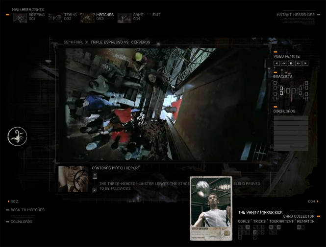

案例发生了什么


Nike 在货轮铁笼里虚构一项“三对三、先进球者胜”的秘密赛事，24 位球星组队淘汰，由坎通纳主持，把一支广告扩成完整的地下足球世界。
神秘蝎子符号预热；三分钟主片与多支续集推进赛程；网站提供球队、战报和互动内容；铬色足球与产品成为收藏符号；线下三人赛让青少年复刻规则。
MARKETING KNOWLEDGE ROUTER · 营销知识路由器
营销启发卡
把历届经典的记忆点、商业结构和迁移方法放在同一层阅读。 卡片底部按主题连接全站相关案例、经典方法与深度文章。
核心动作
秘密俱乐部的窥探欲、巨星组队的想象、街头足球的危险感和淘汰赛悬念；货轮铁笼、铬色蝎子球、坎通纳一句“Au revoir”。
传播与商业机制
Nike 不是世界杯官方赞助商，便自己创造一项更像 Nike 的赛事：更快、更野、更个人主义，也更适合展示球鞋与球员技术；神秘蝎子符号预热；三分钟主片与多支续集推进赛程；网站提供球队、战报和互动内容；铬色足球与产品成为收藏符号；线下三人赛让青少年复刻规则。
可复用的方法
没有官方赛事权益时，可以自造一套规则、视觉符号和连续剧情，让品牌拥有自己的“赛事世界”，而不是在官方话语边缘做一张海报。
适用条件、风险与证据
- 巨星授权、导演、音乐、数字互动和全球线下执行成本极高；今天复制还需处理安全、博彩联想和未成年人活动规范。
- 巨星授权、导演、音乐、数字互动和全球线下执行成本极高；今天复制还需处理安全、博彩联想和未成年人活动规范。 后续复盘还应补齐发布主体、时间线、真实执行图、媒介范围和结果口径；没有这些证据时，不把行业评价或赛事总热度写成品牌增量。
资料与来源
官方资料与原始来源
市场 / 权益
全球
非官方赞助 / 全球球星资源
创意打法
自造赛事型；悬念叙事型；虚实联动型